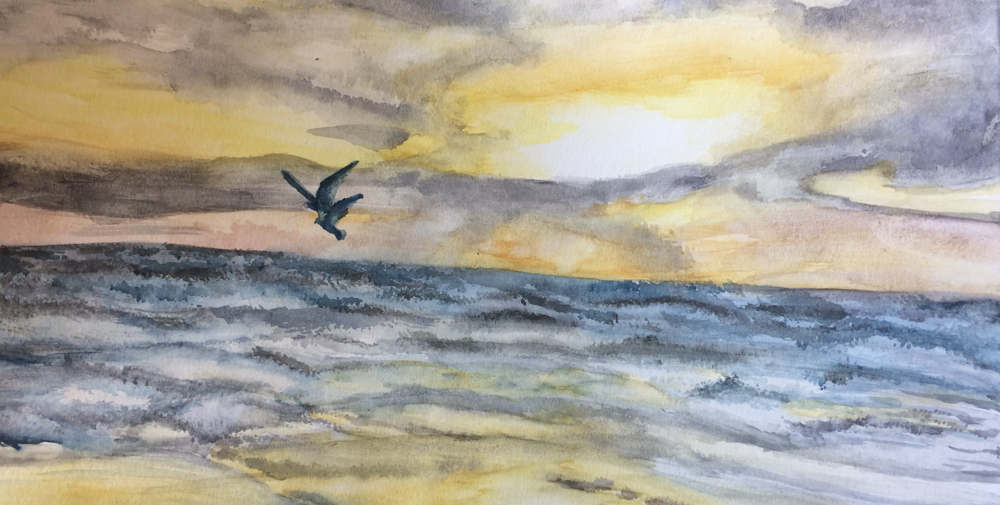

Renée Reardon

Hello
I am a senior studying at the University of Colorado Boulder. I am working towards a Bachelor of Science in Business Administration with an Emphasis in Marketing and Management and a Minor in Creativity, Technology, and Design.
I grew up in Philadelphia, Pennyslvania and I have lived in Colorado since 2015. I have always been very passionate about art, in my free time I enjoy sketching and painting. I decided to go into Marketing because of the creative outlets that it will open me up to. It allows for the ability to solve company’s problems, design webpages and brand image, and utilize creative opportunities and outlets.